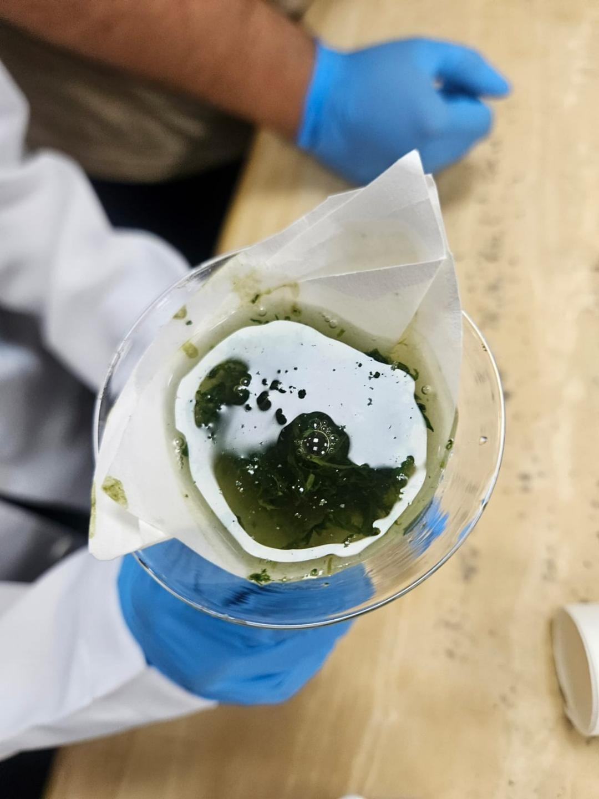

AROMA CÍTRICO
Citronela
Su aroma es conocido por su uso en productos que ayudan a repeler mosquitos. Contiene compuestos aromáticos como el citronelal.
Para investigar¿Cómo cambia el aroma al frotar suavemente sus hojas?
Descubriendo alternativas naturales para cuidar nuestro entorno y comprender cómo funciona la ciencia.
En este blog exploramos algunas plantas aromáticas que tradicionalmente se utilizan para ayudar a mantener alejados a ciertos insectos. También presentamos una propuesta de prácticas sencillas para observar sus características y estudiar su posible efecto de manera responsable.
La eficacia de cada planta puede variar según la especie de insecto, la concentración y las condiciones ambientales. Los preparados naturales no sustituyen las medidas sanitarias recomendadas.
Empezar a explorar → Un laboratorio vivo 🌿
Un laboratorio vivo 🌿Plantas aromáticas que contienen compuestos naturales interesantes para investigar.
Su aroma es conocido por su uso en productos que ayudan a repeler mosquitos. Contiene compuestos aromáticos como el citronelal.

Es una hierba de cocina con aceites esenciales. Su olor y sus compuestos pueden estudiarse como parte del manejo integrado de insectos.

La menta contiene sustancias aromáticas como el mentol en algunas variedades. Es útil para comparar olores y características vegetales.

La experimentación ayuda a formular preguntas, registrar observaciones y comparar resultados. Estas actividades se centran en la observación segura, sin exponer personas ni animales a insectos o sustancias.
Observa las hojas de citronela, albahaca y menta. Pregunta: ¿en qué se parecen y en qué se diferencian sus aromas?
Hojas identificadas, lupa, etiquetas, cuaderno y recipientes limpios para observar las muestras.
Con autorización docente, observa el tamaño, color y textura de cada hoja. Describe el aroma sin acercar la planta directamente a la nariz y sin probar ninguna muestra.
Completa una tabla con las características observadas. Repite las observaciones en condiciones similares y anota cualquier diferencia.

Las plantas aromáticas ofrecen una oportunidad para aprender sobre biodiversidad y compuestos vegetales. La observación de sus hojas permite practicar habilidades científicas; para evaluar una capacidad repelente real harían falta ensayos controlados, protocolos apropiados y supervisión especializada.
Cuidar el ambiente combina conocimiento, prevención y decisiones informadas. Cultivar plantas puede enriquecer los espacios verdes, pero no es por sí solo una protección garantizada contra los mosquitos.
Hungria Flores Joffre · 1ro BGU Foxtrot¿Qué debes hacer antes de sacar una conclusión de una práctica?